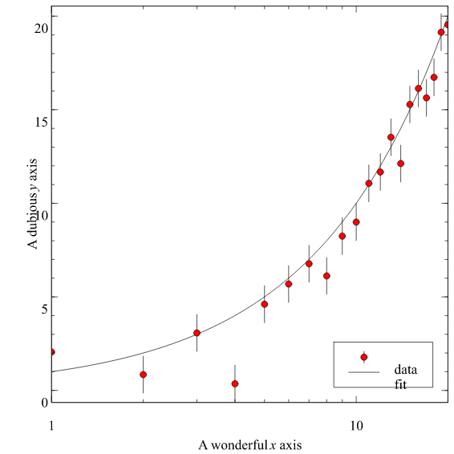

The plot below is a real Veusz document rendered in your browser:
its vector scene is drawn by Veusz's Vello painter compiled to
WebAssembly, on the GPU via WebGPU. No Python, no Qt, no server in the
paint path — just a .scene.json blob and a
.wasm module.

Source: examples/fit.vsz · scene captured via
capture_document_scene · renderer:
veusz-paint-wasm.